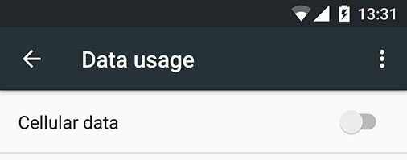
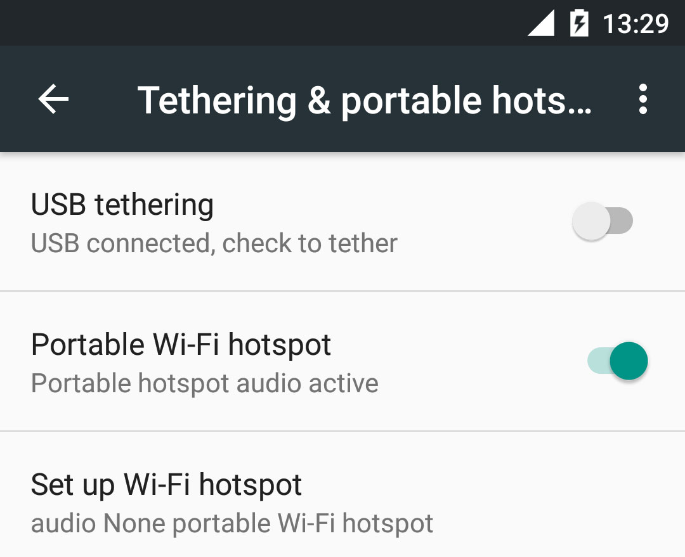
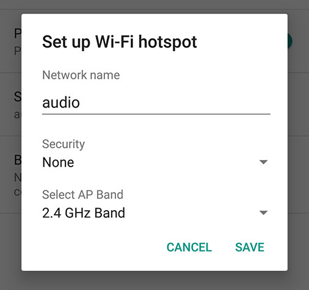

Welcome
Vsit is an app for creating and sharing local audio emissions. Please, before getting started with the streaming, make sure that your network is properly configured. Chek it on the options of the menu.
Vsit is an app for creating and sharing local audio emissions. Please, before getting started with the streaming, make sure that your network is properly configured. Chek it on the options of the menu.
If you don´t have a wifi network, were you and your users can join to connect to the audio streaming, you can create a Wifi Hotspot.
Maybe you don´t want to share your internet, so don´t forget to turn off the data before starting a new Wifi network from your phone.
To turn off data go to Settings, press Data usage and then flick the Mobile data switch from ON to OFF
To create a Wifi hotspot go to Settings, press Wireless & Networks and then Tethering & portable hotspot .Tick the box next to Portable Wi-Fi hotspot. Tap Portable Wi-Fihotspot settings and now you can edit the Wi-Fi network name, and choose a password.
 Here goes any info that the user maybe wants to know.